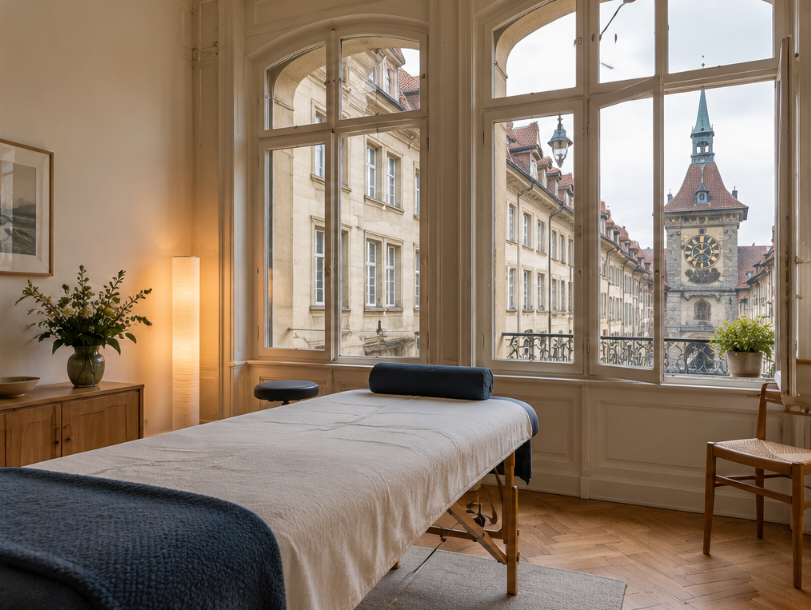
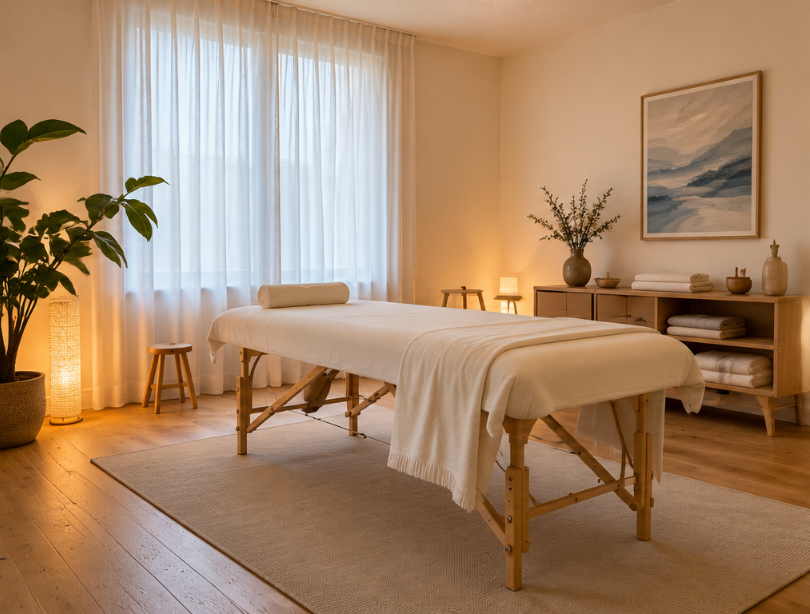

Bern & Niederscherli
Zwei Orte.
Raum für dich.
Rolfing, Faszientherapie und ScarWork – Narbenarbeit mit Sarah Herren. Hier findest du die beiden Praxisadressen und die wichtigsten Informationen für deinen Besuch.

Dein Besuch in Bern
Termine vereinbaren wir persönlich per Telefon oder E-Mail. Angaben zum Eingang und zur Ankunft ergänzen wir hier, damit du die Praxis gut findest.
- Etage
- Noch mit Sarah zu ergänzen.
- Öffentlicher Verkehr
- BERNMOBIL, Buslinie 12: Haltestelle Rathaus.
- Parkmöglichkeiten
- Keine eigenen Parkplätze. Parkhäuser in der Nähe: Rathaus und Metro.
- Zugänglichkeit
- Lift und Zugang noch bestätigen.

Praxis Niederscherli
In Niederscherli.
Schwarzenburgstrasse 854c/o Physiotherapie Niederscherli
3145 NiederscherliAnfahrt in Google Maps
Dein Besuch in Niederscherli
Die Praxis befindet sich bei der Physiotherapie Niederscherli. Auch hier vereinbaren wir deinen Termin persönlich. Weitere Informationen zur Ankunft ergänzen wir nach Rücksprache mit Sarah.
- Etage
- Noch mit Sarah zu ergänzen.
- Öffentlicher Verkehr
- Haltestelle und Fussweg noch ergänzen.
- Parkmöglichkeiten
- Hinweise zu Parkplätzen noch ergänzen.
- Zugänglichkeit
- Eingang und barrierefreien Zugang noch bestätigen.
Persönlich in Kontakt
Welcher Standort
passt für dich?
Für Fragen zu den Praxen und zur Terminvereinbarung erreichst du Sarah direkt.
E-Mail schreiben +41 79 232 71 39
Bitte sende keine medizinischen Unterlagen per unverschlüsselter E-Mail.